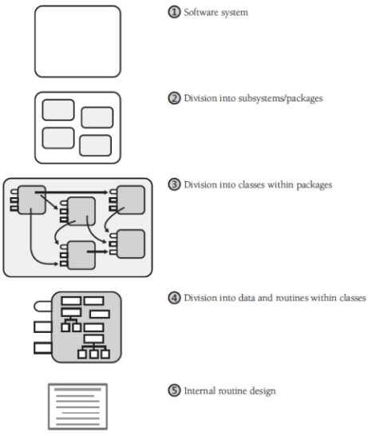

Teórica 07
Introdução à Arquitetura de Software
Conceitos
Princípios
- É uma lei fundamental e compreensiva, doutrina ou assunção;
- Alguns princípios de design de software são noções chave que providenciam as bases para muitas abordagens ou conceitos:
- Abstração;
- Coesão e acoplamento;
- Descomposição e modularização;
- Encapsulamento e ocultação de informação;
- Separação da interface e da implementação;
- Suficiência, completude e primitivas;
- Separação de preocupações.
Design
- Software design é um conceito ou invenção de um esquema para tornar uma especificação em software operacional;
- Design é a atividade que liga os requisitos à implementação em código e testes;
- Um bom design top-level providencia a estrutura que, de forma segura, contém múltiplos designs de lower-level;
- Um bom design é indispensável em grandes projetos.
Níveis de Design

Arquiteturas de Software
- As estruturas estáticas de um sistema define os seus elementos design-time internos e a sua disposição;
- As estruturas dinâmicas de um sistema define os seus elementos run-time e as suas interações;
- As propriedades fundamentais de um manifesto de sistema pode ser definido de duas formas:
- Pelo seu comportamento visível externamente que define as suas interações funcionais entre o sistema e o seu ambiente;
- A propriedade de qualidade que é uma propriedade não funcional.
Requisitos Funcionais e Arquitetura de Software
- A arquitetura tem emergido como uma parte crucial do processo de desenvolvimento;
- Uma arquitetura de software é o resultado de decisões de design tomadas cedo para decompor o sistema em partes;
- Requisitos funcionais não determinam arquiteturas.
O que é que afeta a arquitetura?
- As arquiteturas são influencidas por:
- Stakeholders;
- Organização do desenvolvimento;
- O background e a experiência dos arquitetos;
- O ambiente técnico.
- Uma arquitetura afeta os fatores que a influenciam;
- É o resultado de influências técnicas, de negócio e sociais;
- É acerca do design do sistema e o impacto nas suas qualidades;
- A arquitetura atua como o esqueleto do sistema, limita-o e afeta os seus atributos qualitativos.
Riscos
- Cada projeto irá enfrentar riscos, pelo que não há uma forma correta de fazer a arquitetura de software;
- Devem avaliar-se os riscos de cada projeto;
- Por vezes, é independente da arquitetura, visto que uma arquitetura que seja reutilizada já foi testada previamente;
- As escolhas a nível de arquitetura são mais importantes quando:
- O espaço de soluções é pequeno;
- O risco de falha é grande;
- Há requisitos de atributos de qualidade difíceis de alcançar;
- Está a ser considerado um novo domínio.
Design da arquitetura e design detalhado
- A fase de design pode ser particionada em duas fases:
- Design arquitetural: partes macroscópicas do design, como os módulos e a forma como estes se conectam;
- Design detalhado: tudo o resto.
- O output do design é:
- um conjunto de artefactos que registam as decisões que foram tomadas;
- o rationale para cada decisão não trivial é explicado.
- Cada sistema contém elementos e relações entre eles.
Dependências
- Cada componente tem uma função específica num sistema, sendo que irão colaborar entre si de forma a providenciar uma funcionalidade requerida;
- É importante minimizar as dependências entre componentes de forma a criar uma arquitetura pouco acoplada;
- Ao eliminar dependências desnecessárias, as mudanças são localizadas e não se propagam através do sistema;
- É necessário decidir como é que os componentes irão comunicar entre si e controlar a informação.
Acoplamento

Boas Arquiteturas
Esqueletos
- Uma arquitetura de software com 3 patamares permite que os sistemas IT sejam capazes de localizar mudanças e gerir cargas transacionais;
- Uma arquitetura caracterizada por processos cooperativos é indicada para o desenvolvimento de sistemas operativos, uma vez que isola as falhas;
- É provável que uma rede distribuída VOIP (p.e. Skype) utilize uma arquitetura peer-to-peer.

Atributos de Qualidade
- Uma arquitetura de sistema tem o poder de providenciar ou retirar diversas qualidades, como segurança ou desempenho;
- Mudanças de requisitos funcionais são um desafio, no entanto, a evolução de atributos de qualidade pode forçar mudanças drásticas;
- Geralmente, a arquitetura requerá mais atenção em sistemas de larga escala ou elevada complexidade;
- As arquiteturas só podem ser avaliadas no contexto de objetivos estabelecidos;
- Existem, no entanto, certas rules of thumb.
A Arquitetura é Ortogonal à Funcionalidade
- Ambas podem ser balanceadas;
- Não há uma única arquitetura que seja melhor que as outras, mas algumas são mais indicadas para umas tarefas que outras;
- Um sistema pode ver a sua arquitetura a mudar, no entanto, deverá manter a sua funcionalidade;
- A mesma arquitetura pode ser utilizada num sistema com funcionalidades totalmente diferentes;
- Uma má escolha de arquitetura poderá tornar difícil alcançar os atributos de qualidade e as funcionalidades pretendidas.
O que torna uma arquitetura boa?
- Deve ser baseada numa lista de prioridade de atributos de qualidade;
- Deve ser documentada utilizando views;
- As views devem indicar os problemas dos stakeholders mais importantes;
- Deve ser avaliada pela sua habilidade de fornecer as qualidades mais importantes do sistema;
- Deve ser capaz de suportar uma implementação incremental
Arquiteturas Presumptive
- Família de arquiteturas que dominam um particular domínio;
- Desenvolvedores que nestes domínios optem por outras arquiteturas podem ter de justificar a sua escolha;
- Semelhantes a arquiteturas referenciais;
- Uma arquitetura referencial é a família de arquiteturas que descreve a solução arquitetural para um dado problema.
- Têm sucesso porque são um bom match para os riscos comuns num domínio.